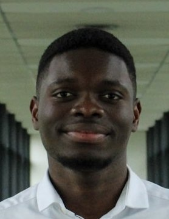
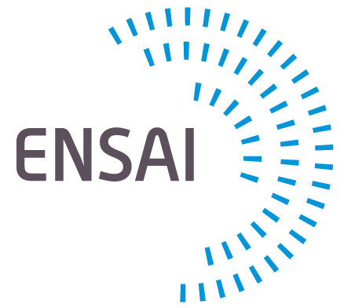
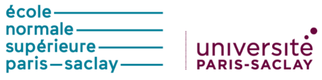

Maxence TEKOU
Machine Learning PhD student supervised by Dorian Baudry
and Bruno Gaujal within the GHOST
team (Inria | Université Grenoble Alpes (UGA) | CNRS), working on Online Learning, Reinforcement Learning, and Optimization.
Interested in designing novel algorithms to optimize planning and
sequential decision-making, both in theory and in various
industry applications. Also deeply interested in the use of Deep
Learning in these areas and, more generally, its theory and the design of novel AI system architectures.
For a detailed overview of my research interests, see the Research page.
“Planning is bringing the future into the present so that you can do something about it now.” - Alan Lakein
01 / About
Biography
Prior to my PhD, I completed two years of engineering studies at ENSAI, a French engineering school offering multidisciplinary training in applied mathematics (statistics), computer science (machine learning and AI), and economics. I then pursued the MVA Master's degree at ENS Paris-Saclay, a renowned research-oriented master's program in applied mathematics and AI.
I grew up in Togo, where I pursued my studies while also playing basketball at the national level during high school. I then moved to France to undertake three years of intensive training in mathematics, physics, and computer science. This prepared me for the highly competitive entrance examinations to France's leading engineering schools, through which I was admitted to ENSAI.

